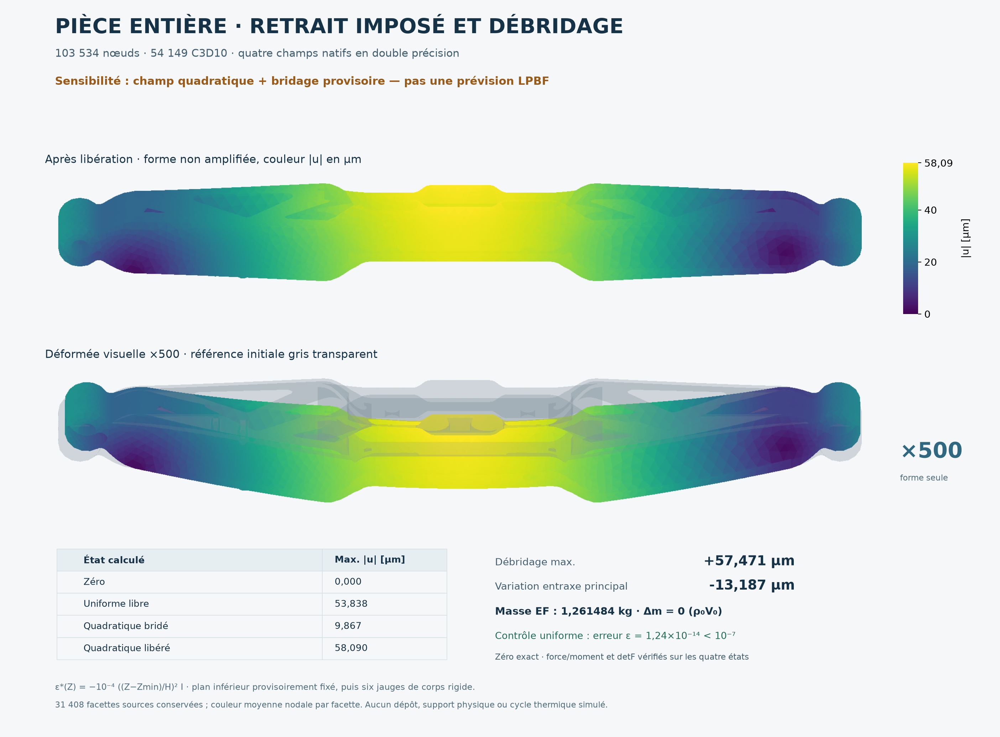
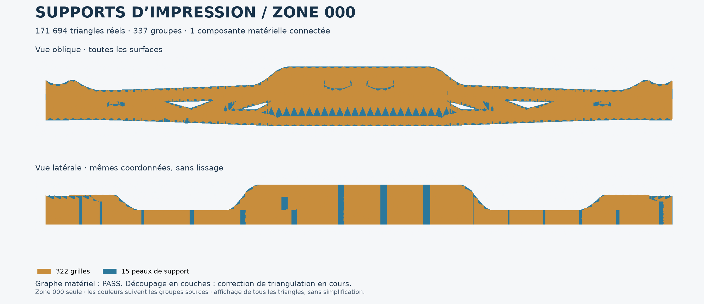
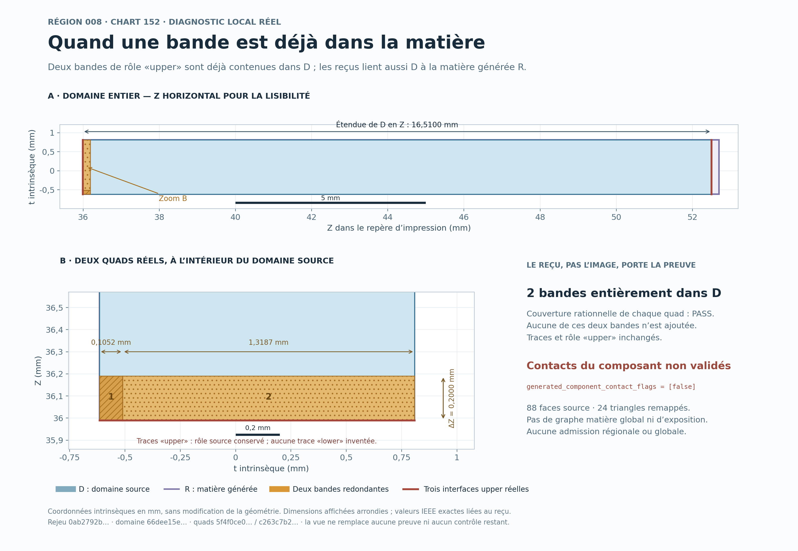
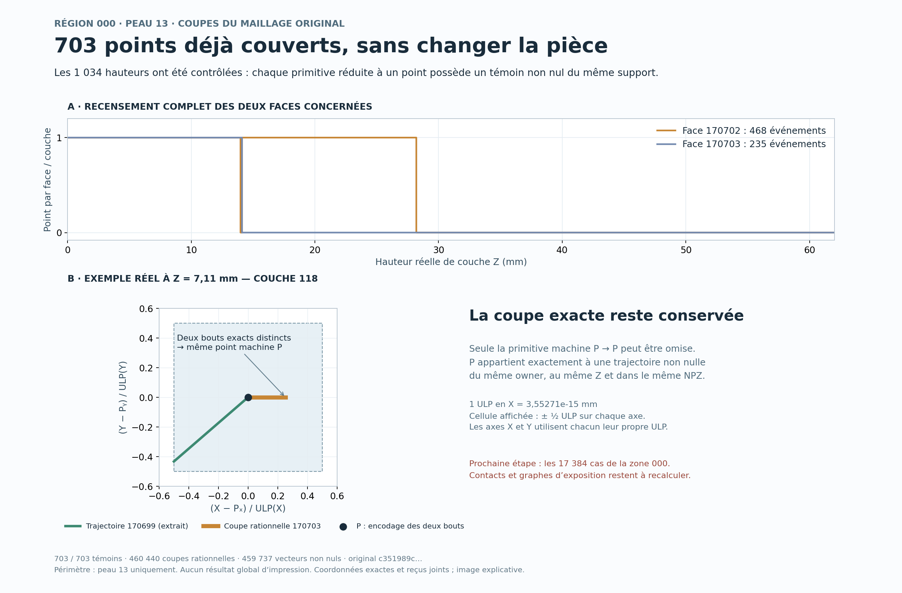
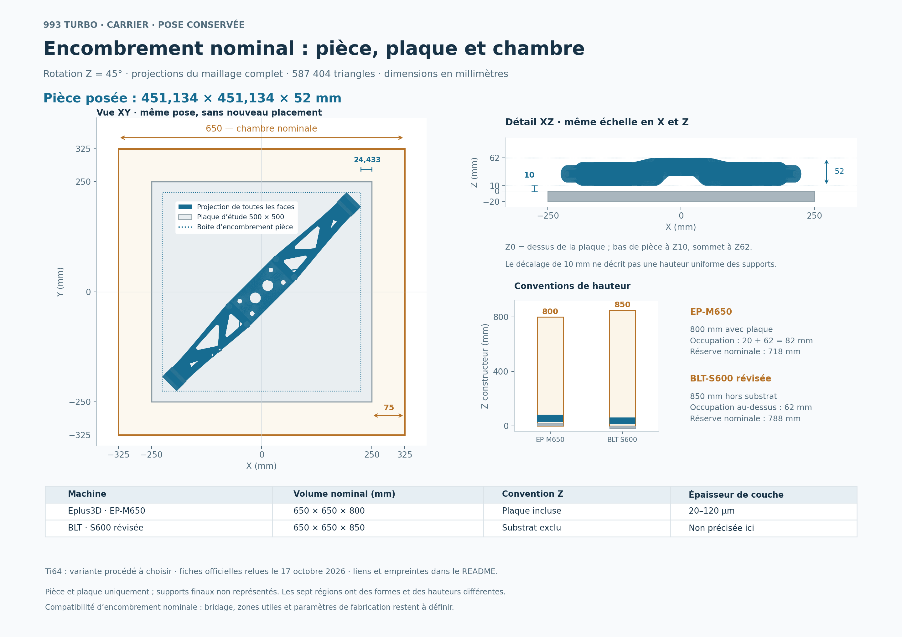
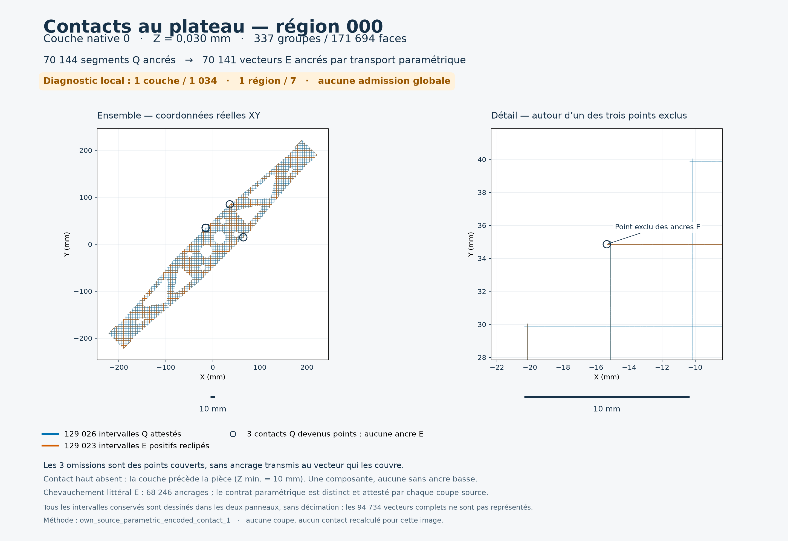
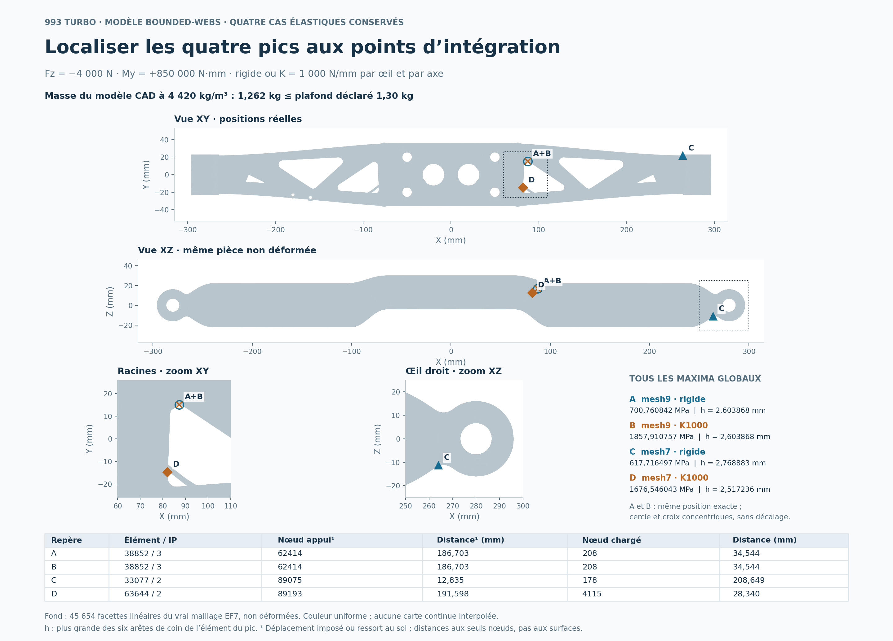
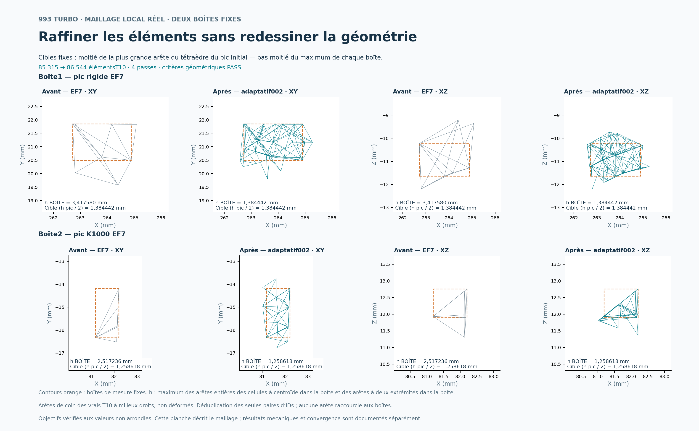
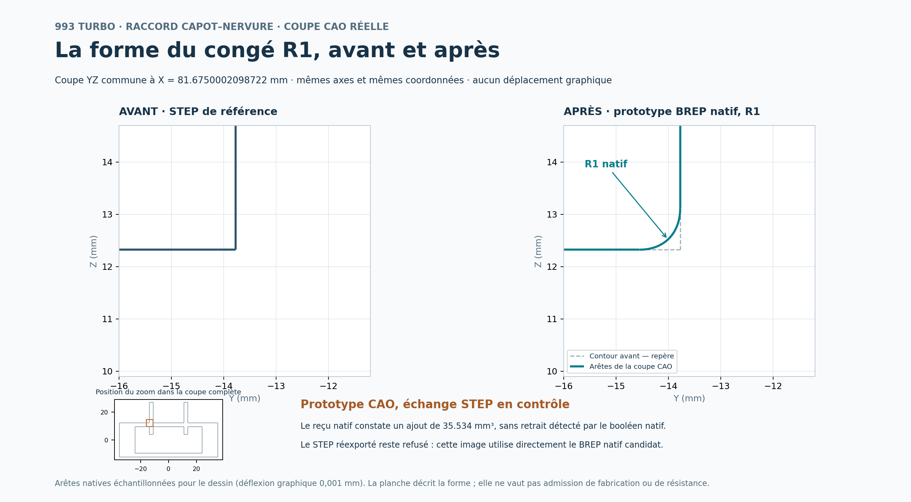

993 TURBO · DOSSIER VISUEL
Du modèle aux couches d’impression
Images produites à partir des fichiers CAD, des triangles et des résultats de calcul conservés dans le projet.
Pièce retenue : 1,262 kg. Géométrie et couches de la pièce calculées. Préparation des supports d’impression en cours de calcul et de contrôle.
La pièce retenue
1,262 kg sur une limite de 1,30 kg. Les vues utilisent tous les triangles du STL actuel.

Les dimensions du modèle
Plan coté de la géométrie de travail, avec les interfaces conservées.

La surface avant et après
Comparaison du maillage et de la référence STEP dans les mêmes coordonnées.

Retrait imposé et débridage de la pièce entière
Quatre états calculés sur le même maillage, avec sortie native en double précision. Sous le champ quadratique imposé et le bridage provisoire, le déplacement maximal après libération vaut 58,090 µm ; la forme de la seconde vue est amplifiée par 500. Les contrôles du cas uniforme passent au seuil initial. Cette étude de sensibilité reste distincte du calcul du procédé LPBF.

PDF · SVG · Champs natifs, hypothèses et reproduction · Copies et rejeu vérifiés
Une couche d’impression réelle
Couche d’indice 518 sur 1 034, à Z = 31,110 mm. Contours et hachures de la pièce ; cette planche ne contient aucun support.

Les sept enveloppes de construction
La pièce est montrée en gris translucide dans sa pose d’impression. Les couleurs identifient les sept enveloppes natives admises ; les surfaces de support et leurs couches restent en cours de calcul.

PDF de la vue globale · Sources et reproduction
Trois régions de supports d’impression calculées
La pièce est translucide ; les couleurs montrent les surfaces réelles des régions 003, 009 et 010 à leur position conservée. Trois checkpoints vérifiés sur les sept régions. Le contrôle historique des coupes de la région 010 a refusé la couche 68. La copie corrigée par CGAL passe depuis les 1 034 couches strictes ; ces images conservent les surfaces historiques.

PDF de la vue d’ensemble · Sources et reproduction
Correction de la triangulation avec CGAL
Deux exemples réels expliquent le changement de diagonale dans les supports d’impression. CGAL a traité 146 quadrilatères ; les schémas sont hors échelle et reprennent les identifiants réels. La copie corrigée conserve les sommets et les attributs ; le contrôle local fait passer les coupes dégénérées de 1 185 à zéro. Le nouveau graphe de connexion est vérifié et les 1 034 couches de cette région passent le découpeur strict, avec ses critères inchangés. L’audit de l’ensemble des supports reste à terminer.

PDF · Données, explication et reproduction · Trois formats reproduits à l’octet · Trois régions corrigées : certificats, fichiers et rejeu réel
Première couche des supports — contacts calculés
Région 010, Z = 0,030 mm : 6 753 vecteurs et 6 658 intervalles de contact au plateau, tous dessinés. Cette planche conserve le préfixe historique de 14 couches contrôlées. Le contrôle historique a refusé une coupe à la couche 68. Une nouvelle copie corrigée par CGAL passe désormais les 1 034 couches ; cette image conserve les vecteurs du préfixe historique.

PDF · Données incluses, reproduction et portée des contrôles
La grande zone 000 : 171 694 triangles réels
322 grilles et 15 peaux de support, dans les coordonnées originales. Le graphe matériel relie les 337 groupes en une composante avec les deux ancrages. Cette planche conserve les surfaces originales et le refus du découpeur historique. Le nouveau contrôle des 17 384 encodages réduits à un point trouve pour chacun un témoin non nul du même groupe ; le raccord des contacts et des graphes reste à terminer.

PDF · SVG · Sources, preuves et reproduction · Contrôle du rendu
Les supports en cours de correction
Essai perforé refusé : la région droite contient encore 26 composantes sans les deux ancrages requis. Les îlots sont montrés en rouge dans leur plan réel.

Deux bandes déjà contenues dans la matière
Région 008, chart 152 : les deux bandes orange sont déjà entièrement dans le domaine source selon les reçus rationnels conservés. Les 88 faces source et les 24 triangles remappés restent liés aux données réelles. Les contacts du composant ne sont pas validés ; cette planche ne constitue aucune admission régionale ou globale.

PDF · SVG · Données et périmètre · Copies exactes et revue visuelle
703 points déjà couverts dans la peau 13
Cette planche montre le diagnostic historique de la peau 13 : 703 événements sur les 1 034 hauteurs. Le contrôle suivant couvre les 17 384 événements de la zone 000, avec un témoin non nul du même groupe pour chacun. Les coupes rationnelles et la géométrie restent conservées ; contacts et graphes doivent être recalculés avec la nouvelle règle.

PDF · SVG · Données, preuves et reproduction
La pose actuelle dans une chambre de 650 mm
Les 587 404 triangles réels occupent 451,134 × 451,134 × 52 mm dans la pose conservée. La pièce garde 24,433 mm par bord sur la plaque d’étude de 500 mm. Les conventions de hauteur des EP-M650 et BLT-S600 sont explicitées depuis leurs fiches officielles ; cette vue concerne l’encombrement de la pièce et de la plaque.

PDF · SVG · Données, fiches officielles et reproduction · Copies et rejeu vérifiés
Contacts de la première couche — région 000
Les 337 groupes de supports sont examinés à Z = 0,030 mm. La planche conserve tous les intervalles de contact avant et après encodage des segments ; trois contacts devenus points ne créent aucune ancre supplémentaire. Les 129 023 certificats ont été revérifiés séparément avec des fractions exactes. Le résultat porte sur une couche et une région.

PDF · SVG · Données, contrôles et reproduction · Copie et rejeu vérifiés
Localiser les quatre pics aux points d’intégration
Quatre maxima élastiques conservés, pour les maillages 9 et 7 avec appuis rigides ou K1000. Les deux pics du maillage 9 sont exactement superposés : les symboles restent concentriques, sans déplacement. Le fond montre les 45 654 facettes du vrai maillage EF7 non déformé ; les valeurs, tailles d’élément h et distances aux seuls nœuds restent liées aux résultats réels. Cette localisation ne démontre pas une convergence du maillage.

PDF · SVG · Résultats, données et reproduction · Copie historique · Trois formats rejoués à l’octet
Raffinement local du maillage — deux boîtes contrôlées
Le maillage EF7 original est comparé au raffinement adaptatif réellement terminé en quatre passes. Les huit vues montrent toutes les arêtes entières du périmètre de mesure, dans deux boîtes fixes et deux projections. Les maxima mesurés dans chaque boîte atteignent les cibles fixées avant calcul, aux valeurs non arrondies ; les nœuds existants, ensembles nodaux et 3 218 facettes protégées sont conservés. Le maillage est géométriquement contrôlé. La convergence des contraintes reste à étudier ; les résultats mécaniques sont documentés séparément.

PDF · SVG · Mesures, données et reproduction · Rejeu des trois formats et QA visuelle
La forme du congé R1 réellement construit
Coupe CAO avant/après dans le même plan et les mêmes coordonnées. Le R1 est le congé3D natif du BREP candidat ; aucun arc de cercle n’est redessiné pour le représenter. Le prototype est montré directement depuis ce BREP : l’échange STEP reste en contrôle et son reçu conserve le refus. Le rejeu autonome porte sur les points déjà extraits, sans nouvelle construction CAO.

PDF · SVG · Points réels, parents CAO et reproduction · Trois formats rejoués à l’octet